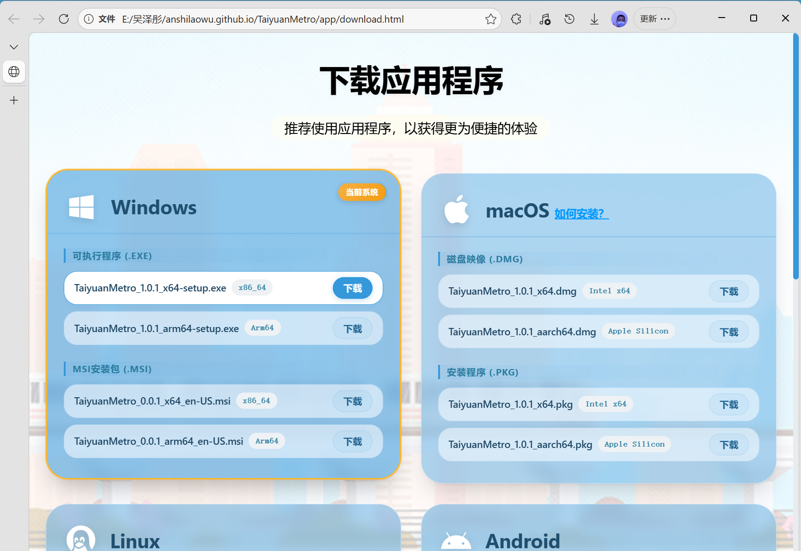
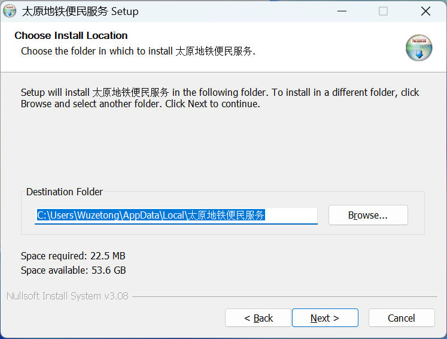
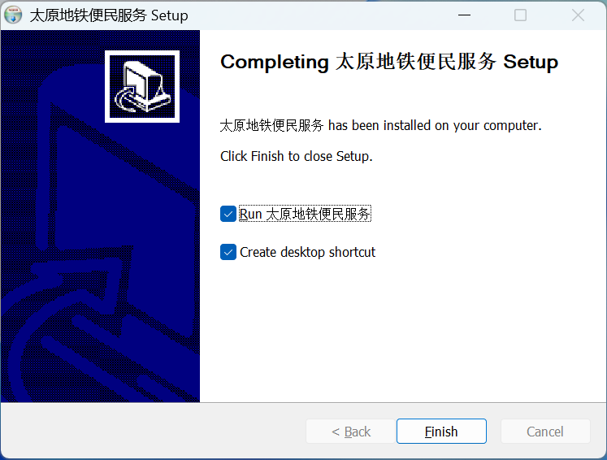
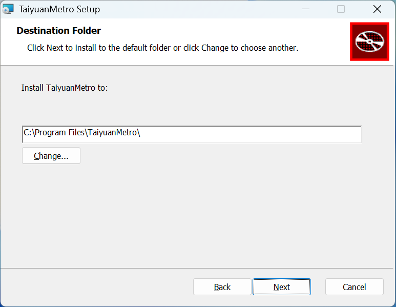
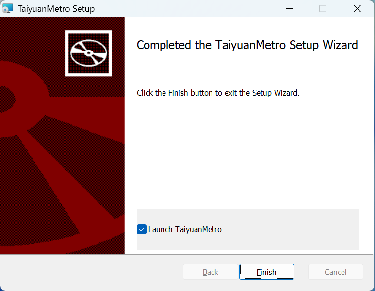

注：在Windows的应用程序中，需要按Alt+←或Alt+→键以前进/后退页面。

2. 在弹出的窗口中，单击“Next”并选择安装位置

3. 单击“Next”并等待安装完成
4. 单击“Next”并选择是否现在运行、是否创建桌面快捷方式

5. 即可正常使用
2. 在弹出的窗口中，单击“Next”并选择安装位置

3. 单击“Install”并等待安装完成
4. 选择是否现在运行，即可正常使用
